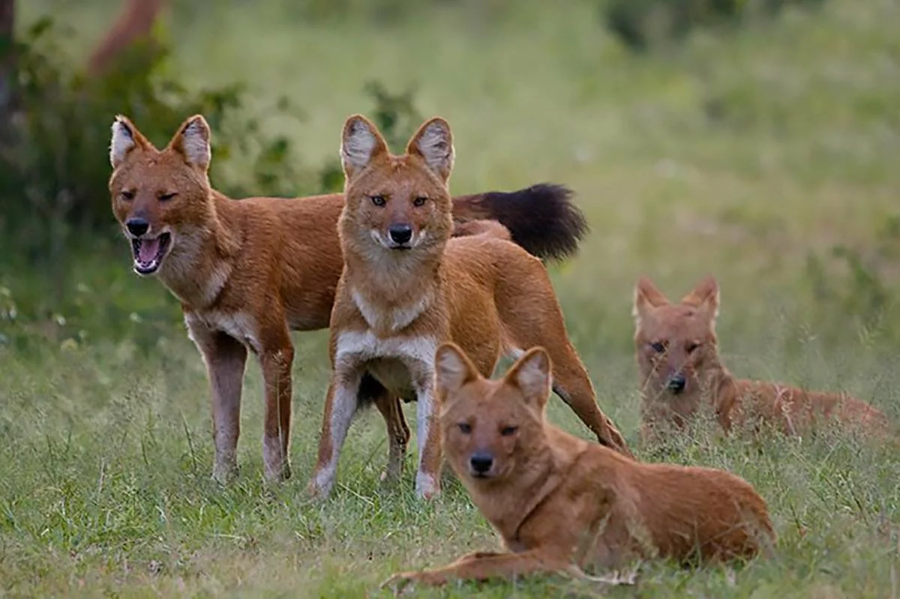

|
Красный волк
Мандаринка
|
Красный волк
Разновидность семейства псовых

Очень редкий вид псовых, находящийся под угрозой исчезновения. Внешне похож на нечто среднее между волком, лисицей и шакалом. От обычного волка красные отличаются в первую очередь окраской, более пушистой шерстью и длинным хвостом. Красные волки распространены на всей территории от Тянь-Шаня до Алтая и на юг до Малайского архипелага. Точных данных о нынешнем состоянии популяции нет, но красный волк занесён в Красную книгу со статусом исчезающий вид.
Источник: https://m.fishki.net/2183273-10-udivitelynyh-zhivotnyh-kotorye-obitajut-v-rossii.html?ysclid=li41hv35wu453660079
|